2m Blumentopfantenne nach VK2ZOI
Die Half-Wave Flower Pot Antenna von VK2ZOI ist eine einfache, selbstbaubare 2m-Antenne aus Koaxialkabel und PVC-Rohr. Ich habe sie zusammen mit meinem Vater gebaut – sie funktioniert hervorragend und kommt ganz ohne Bohrmaschine oder Spezialwerkzeug aus. Hier ist die deutsche Anleitung.
Anleitung & Bilder basieren auf dem Originalartikel von VK2ZOI – RIP, Wayne (2023).
Grundaufbau
Das Schema zeigt den prinzipiellen Aufbau der 2m-Version. Der Strahler besteht aus dem Innenleiter eines Koaxialkabels, die Mantelwelle wird durch eine angepasste Spule (Choke) am Fußpunkt unterdrückt.
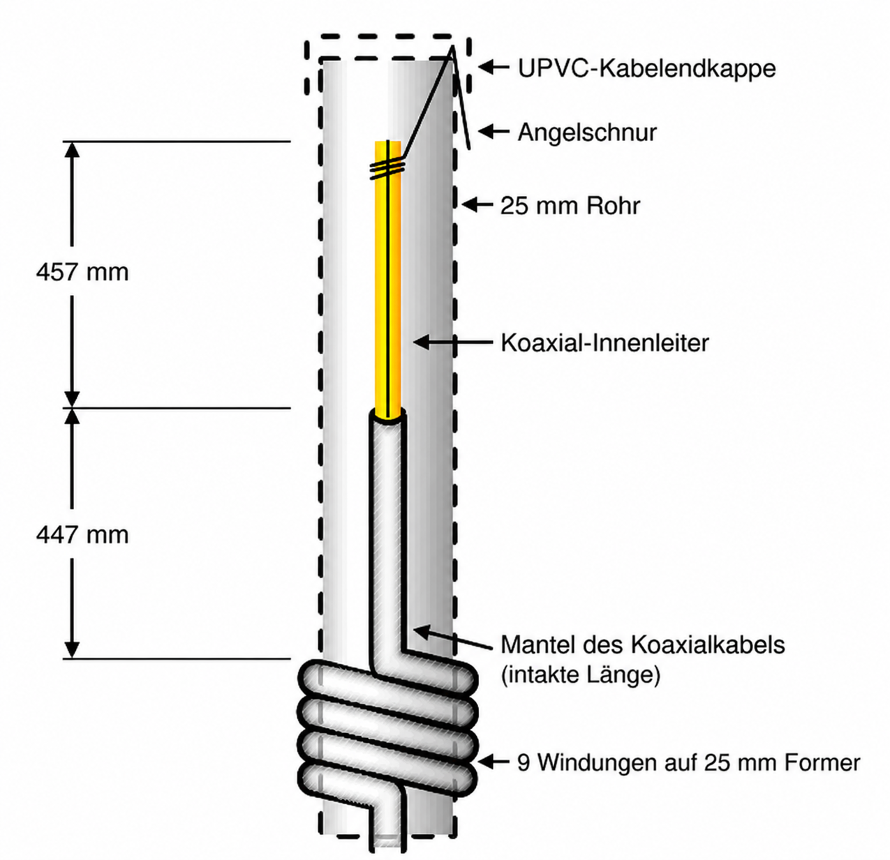
Bauanleitung
- Rohr vorbereiten – Ein 25 mm graues PVC-Installationsrohr (mindestens 1 m Länge) besorgen. Längeres Rohr gibt mehr Platz unterhalb der Spule zur Befestigung am Antennenmast.
-
Löcher für die Spule bohren – Zwei Löcher in das Rohr
bohren: Das obere etwa 925 mm vom Ende entfernt (das ist die Strahlerlänge
zuzüglich etwas Spielraum zur Endkappe). Der Abstand der Löcher richtet sich
nach dem Kabeldurchmesser – als Richtwert zwei 6-mm-Löcher im Abstand
von 45 mm. Wickel am besten 9 Windungen provisorisch auf und messe nach.
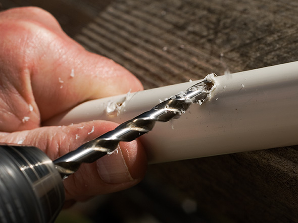
-
Koaxialkabel vorbereiten – Etwa 5–6 m RG58-Koax
(nur mit Geflechtschirm, keine Folie!) nehmen. Von einem Ende 457 mm des
Außenmantels und des Schirms abisolieren – das wird der obere Strahler.
Wenn es etwas zu kurz ist, lässt sich ein Stück Draht oder der abisolierte
Schirm anlöten.
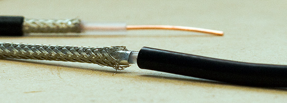
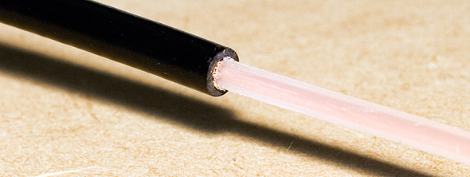
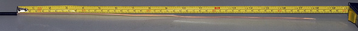
-
Nylonfaden anbringen – Mit ein paar halben Schlägen
einen etwa 50 cm langen Nylonfaden (Fischerschnur) an der Spitze des oberen
Strahlers befestigen. Damit wird der Strahler später gespannt und unter der
Endkappe fixiert.
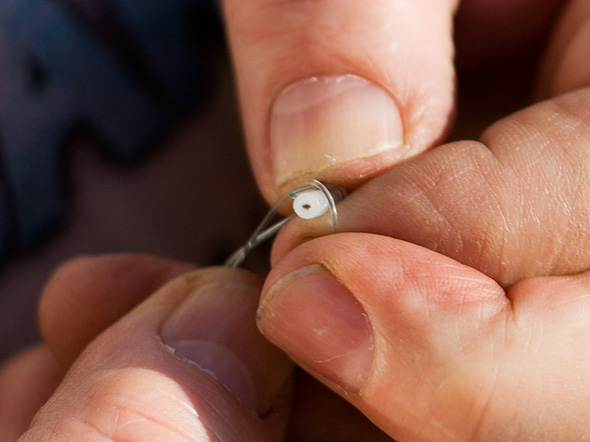
-
Markierung setzen – 447 mm unterhalb des Speisepunkts
(dort, wo der Schirm beginnt) eine Markierung auf dem Kabel anbringen (Klebeband,
Farbe o. ä.). Das ist der spätere Anschlag, an dem das Kabel im Rohr
verschwindet.
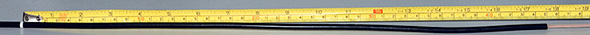
-
Kabel in das Rohr einführen – Den Strahler mitsamt
Nylonfaden von oben durch das obere Spulenloch stecken und so weit
hineinschieben, bis die Markierung im Loch verschwindet.
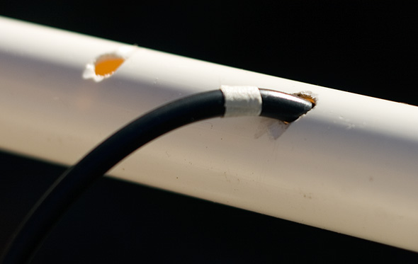
-
Strahler spannen – Den Nylonfaden oben herausziehen
und den Strahler damit vorsichtig straff ziehen. Der Knick am oberen Spulenloch
legt sich so gerade.
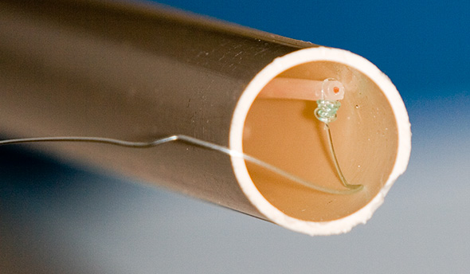
-
Spule wickeln – Das Kabel von außen um das Rohr wickeln
(9 Windungen) und dann durch das untere Loch wieder nach innen führen. Mit
Gefühl nachhelfen, bis die Spule fest sitzt. Dabei darauf achten, dass die
Markierung weiterhin durch das obere Loch sichtbar bleibt.
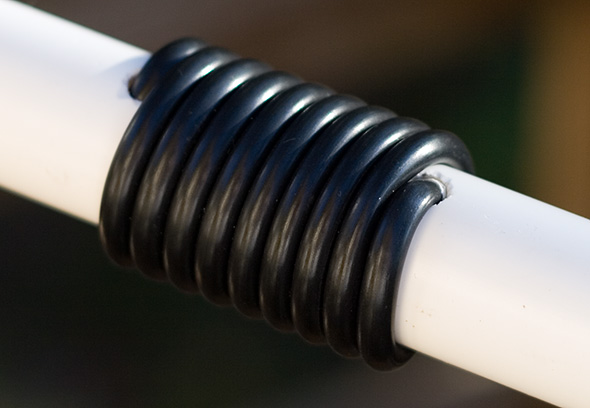
- Endkappe vorbereiten – Oben am Rohr eine schmale Kerbe einsägen, den Nylonfaden straff einlegen und später mit der Endkappe festklemmen. So bleibt der Strahler dauerhaft gerade gespannt.
-
Stecker montieren und SWR messen – Einen PL-Stecker
anlöten und das SWR messen. Bei Bedarf den oberen Strahler etwas kürzen &
in der Regel ist aber kaum Nachtrimmen nötig.
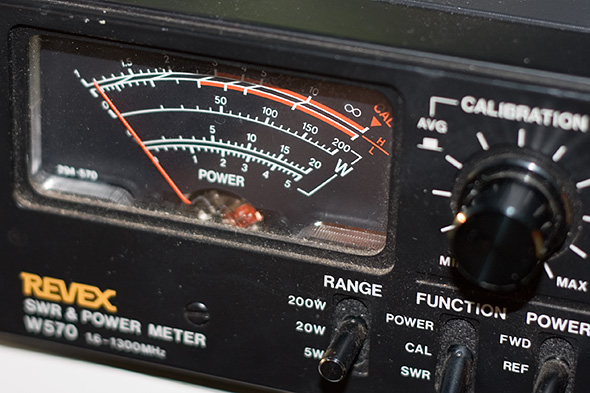
Das SWR-Diagramm der fertigen 2m-Antenne sollte in etwa so aussehen:
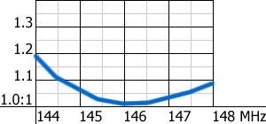
Wichtig: Das untere Rohrende offen lassen, damit Kondenswasser ablaufen kann. Nicht verschließen oder abdichten!
Tipps
-
Die Kanten der Spulenlöcher mit einer Feile entgraten – das schont
das Kabel und erleichtert das Wickeln.
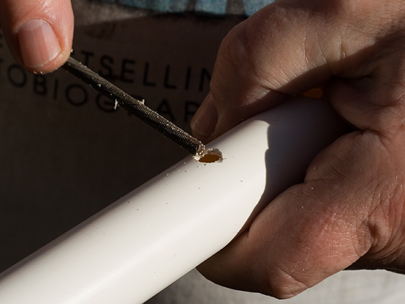
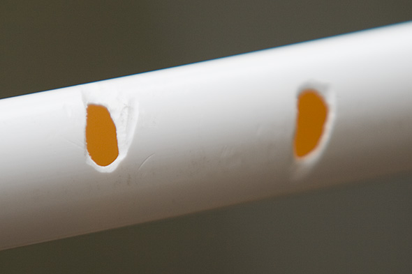
-
Den Speisepunkt und die Ein-/Austrittspunkte der Spule mit Schrumpfschlauch
gegen Feuchtigkeit schützen.
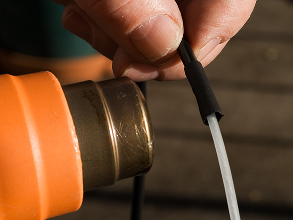
-
Auch das untere Ende des Rohrs mit Schrumpfschlauch einfassen – das
schützt das austretende Kabel und sieht sauber aus.
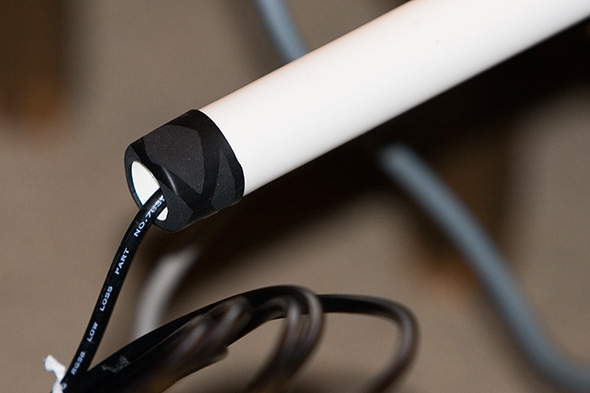
- Nur Koax mit Geflechtschirm verwenden. Folien-Schirm bricht an den engen Biegestellen der Spule – die Antenne funktioniert dann nicht.
- Vogelschutz: Die Spule kann von Vögeln (z. B. Kakadus) attackiert werden. Eine leere Silikonkartusche oder eine PET-Flasche (mit Heißluft aufgezogen) schützt die Spule. Vorher die Spule mit PVC-Klebeband umwickeln, um Wasser abzuhalten.
Anmerkung zum Rohrmaterial
Graues PVC-Installationsrohr ist zwar nicht das dielektrisch verlustärmste Material, aber sehr UV-beständig. Die Bauform gleicht den Einfluss des Rohrs durch rund 2 % kürzere Elemente aus. Wer Orangenes (HD-)Rohr, Bewässerungsrohr oder Glasfaser verwendet, muss die Längen entsprechend anpassen.
Skalierung auf andere Frequenzen
Der Aufbau lässt sich auf andere Frequenzen übertragen. Die Tabelle zeigt die Eigenresonanz der Choke-Spule aus RG58 auf verschiedenen Rohrdurchmessern:
| Windungen | Rohr-Außendurchmesser | ||
|---|---|---|---|
| 25 mm | 32 mm | 50 mm | |
| 4 | – | 160 | – |
| 5 | 150 | 136 | 85 |
| 8 | 142 | 106 | 65 |
| 9 | 135 | 100 | 60 |
| 10 | 129 | 95 | 57 |
| 12 | 117 | 84 | 52 |
| 15 | 105 | 75 | 47 |
Frequenzen in MHz. Die Spule sollte etwa 5–6 % unterhalb der gewünschten Betriebsfrequenz resonant sein.